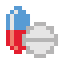

通院記録
通院した記録をテキストデータとして保存できる機能になります
▼保存できるデータ
- 日付
- 病院
- 診察理由
- メモ
- 医療費（支払った金額/保険金額）
- 交通費（交通費/交通手段）
 服薬記録（薬）
現在服薬中の薬、過去に服薬したことがある薬を服薬のタイミングの詳細や副作用など薬に関するご自身の情報を整理できます
薬ごとにお好きなアイコンを選ぶことで、服薬中の薬がカレンダーにそのアイコンでわかりやすく表示できます
▼保存できるデータ
- 薬の名前
- 服薬スケジュール
- 服薬中の有無
- タグ（起床時/昼/夕/寝る前/食前/食間/食後）
- 服薬スケジュール（毎日/曜日毎/数日毎/周期毎/任意）
- 開始日/終了日
- 薬の種類 (17種類から選択可能)
- 有効成分量
- メモ
- 副作用や効用のメモ
病院を登録（診療予定）
医療機関や医師（かかりつけ医）を登録することができます
登録しておくと、このアプリから電話やメール、予約リンク（リンクはご自身で指定できます）から直接診療予約ができます
また、医療機関・医師を登録後、登録したカードから次回の診療予定を入力でき、カレンダーページで病院のアイコンで予定が表示されます
▼登録できるデータ
- 病院名
- 医師名
- 電話番号/メールアドレス/リンク
- アイコンで表示され、タップでそれぞれのアクションが実行できます
- 次回の診療予定
入力することで、カレンダーで病院アイコンが該当の日付に表示されます
カレンダー
月毎の服薬・通院専用のカレンダーが表示されます
服薬記録（薬）ページと「病院を登録（診療予定）」ページで登録したデータに従ってカレンダーにアイコンが表示されます
画面下部には選択している日付のリスト形式でその日のタスクが表示されます
▼できること
- 薬のタスクは「スキップ」か「完了」をタップで記録可能
- 診療予定のタスクは「変更」か「記録」をタップできます。記録ボタンタップ時には、通院記録ページに遷移します
- バイタル（体温/血圧/心拍数/酸素濃度）を記録できます
- ナビゲーションバー左上の「グラフ」アイコンより、バイタルの傾向をグラフ（週/月/年）で表示できます
▼ポイント
画面上部の「歯車」アイコンをタップすると、「毎日の薬アイコンを非表示」にすることができます。毎日飲む薬が多い方は、周期的な服薬のみをカレンダーに表示させることができます。
バイタル
カレンダーの日付ごとに登録できるバイタルの記録に従い、グラフとして表示できます
スワイプすることで、表示している期間を前後に移動できます
▼表示される項目
- 体温/血圧/心拍数/酸素濃度
- X軸は、週/月/年で変更できます
アカウント管理
アカウント名、メールアドレス、パスワードにてアカウントを作成しておくことができます
ピクセルサポーターとして3匹の犬からお好きなサポーターを選択できます
認証やデータ復旧、ピクセルサポーターの存在価値は順次アップデートいたします
現状は設定のみお願いしますと幸いです